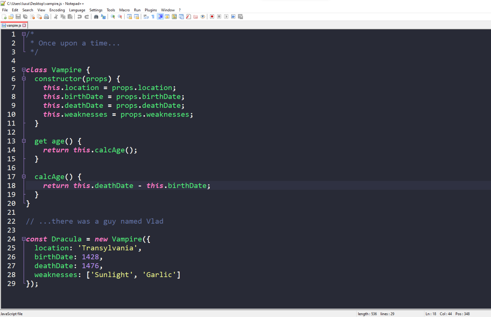

Bruno Szewczyk
Temat 1 (część 1, 1.4)
10 IX 2023
Edytory stron WWW
Aplikacje i strony internetowe
Na lekcjach będziemy korzystali z notepad'a ++, darmowego i ogólnodostępnego edytora tekstu. Notepad++ jest naprawdę fajny, ale ja polecam inny program.
Na codzień korzystam z visual studio code, znanego i lekkiego edytora kodu. VSC pomaga mi w szukaniu błędów, ale pomaga mi również w organizacji mojego kodu. Polecam VSC, szczególnie dla mało doświadczonych programistów 😉

Notepad++